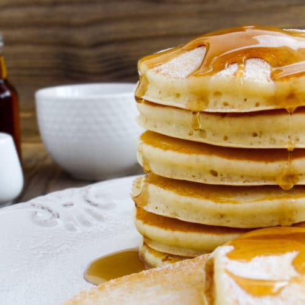

Pancakes

Description
- Prep: 5 mins
- Cook: 15 mins
- Total: 20 mins
- Servings: 8
Ingredients
- 1½ cups all-purpose flour
- 3½ teaspoons baking powder
- ¼ teaspoon salt, or more to taste
- 1 tablespoon white sugar
- 1¼ cups milk
- 1 egg
- 3 tablespoons butter, melted
Directions
- In a large bowl, sift together the flour, baking powder, salt and sugar. Make a
well in the center and pour in the milk, egg and melted butter; mix until smooth.
- Heat a lightly oiled griddle or frying pan over medium-high heat. Pour or scoop
the batter onto the griddle, using approximately 1/4 cup for each pancake.
Brown on both sides and serve hot.
Main Page